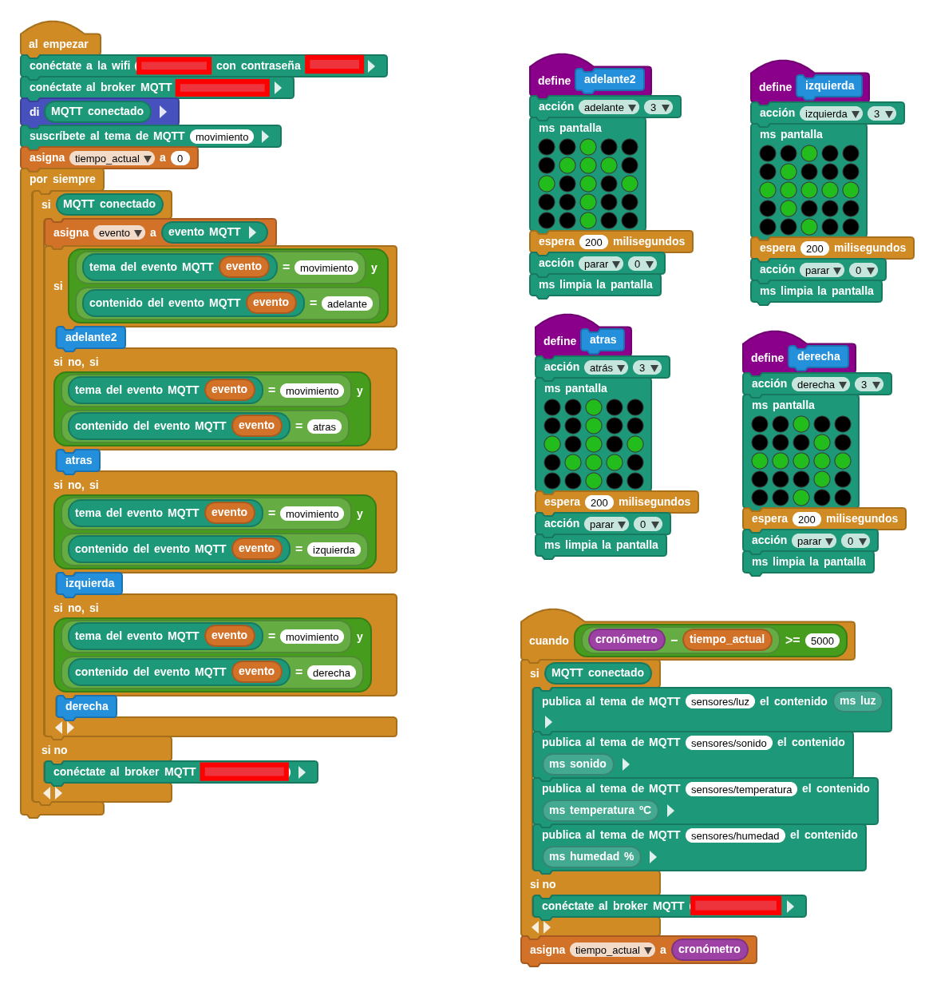
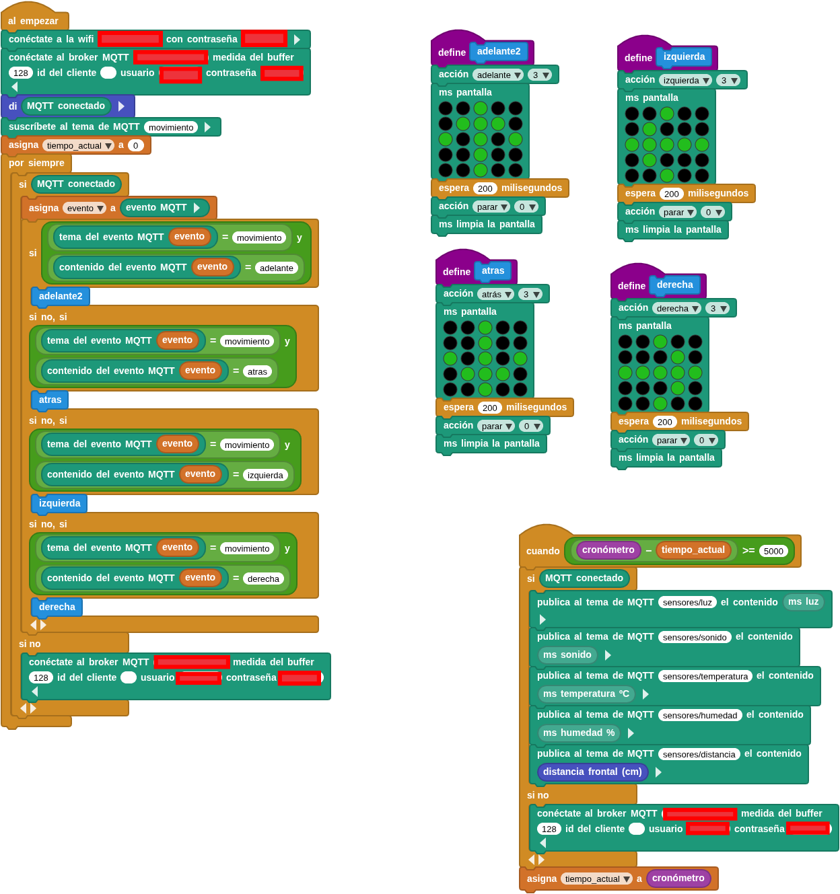

microSTEAMakers
La placa que se conectará al servidor MQTT será la microSTEAMakers, que es una ESP32 con formato micro:bit y por tanto con capacidades wifi. Está placa está programada con microblocks que tiene librerías wifi y mqtt.
La placa que se conectará al servidor MQTT será la microSTEAMakers, que es una ESP32 con formato micro:bit y por tanto con capacidades wifi. Está placa está programada con microblocks que tiene librerías wifi y mqtt.
El programa se subscribe a temas publicados por un dashboard con los controles de movimiento y publica temas relacionados con los sensores y sus valores. El programa no presenta autenticación. Debemos indicar los datos de comexión a la red wifi, y la ip pública o local de dónde está situado el broker (mosquitto en nuestro caso).

Este programa presenta identificación de usuarios y añade a la publicación de datos de sensores la distancia de cutebot. Además debemos indicar los datos de conexión a red wifi, la ip pública o local de nuestro broker (mosquitto en nuestro caso), y como es autenticada la conexión un nombre de usuario y contraseña válido en nuestro servidor mosquitto.

Obra publicada con Licencia Creative Commons Reconocimiento Compartir igual 4.0